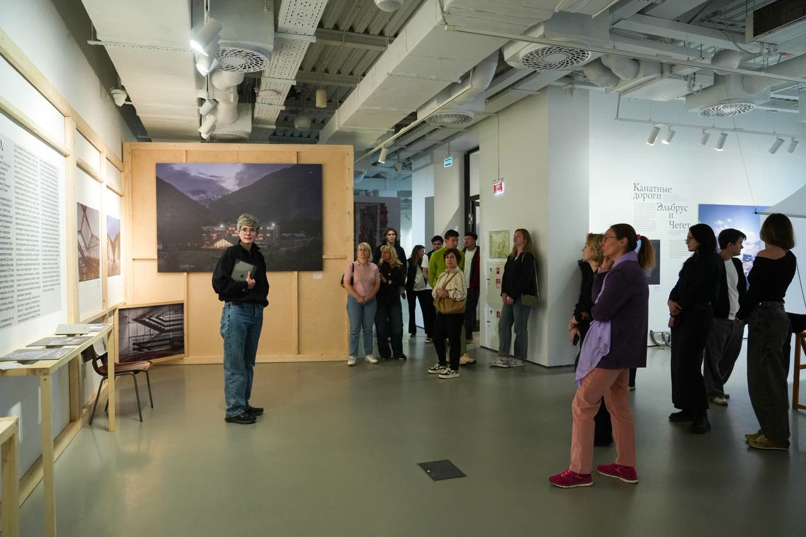
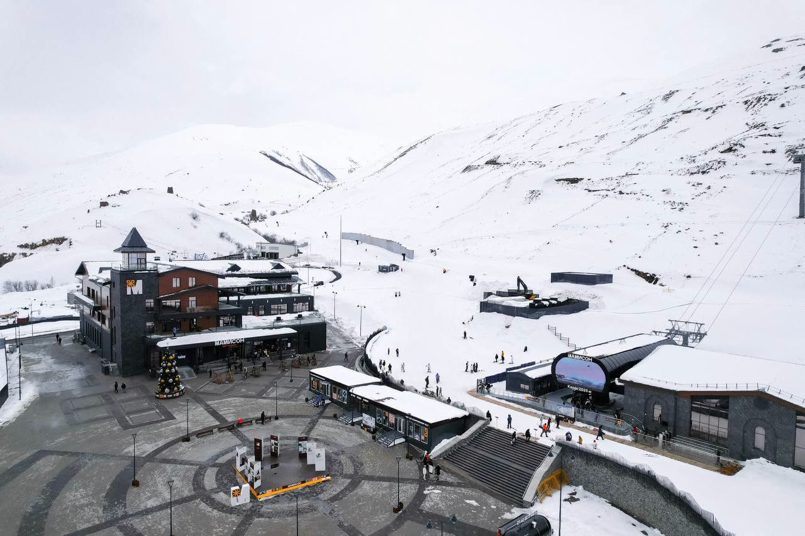
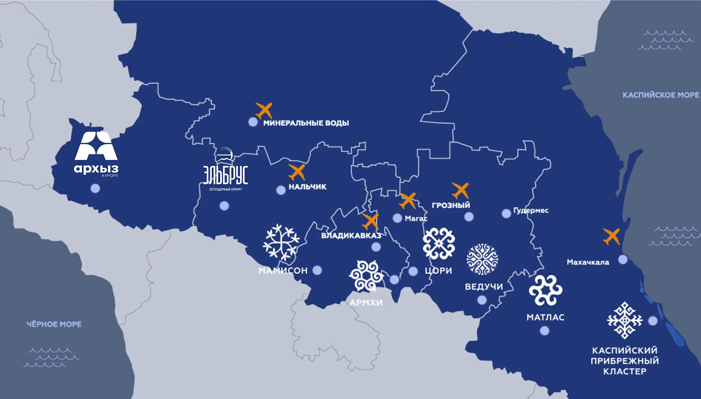

Новости

5 ноября 2026Выставка Кавказ.РФ о советском наследии Эльбруса переезжает из Москвы в Нальчик
ЧитатьДеятельность
Создаём условия для развития Северного Кавказа: управляем особыми экономическими зонами и выстраиваем взаимовыгодное сотрудничество государства и бизнеса.

Инвестору
Станьте резидентом
особой экономической зоны
Минимального порога вложений нет. Готовая инфраструктура, льготная аренда земли и бесплатное подключение к сетям. Весь путь — около 3–4 месяцев.
Как стать резидентомКурорты
Туристический кластер Северного Кавказа
